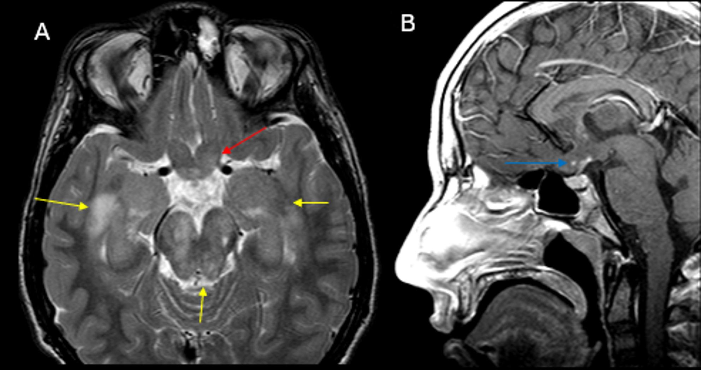
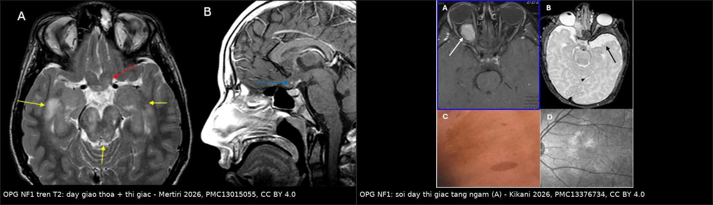
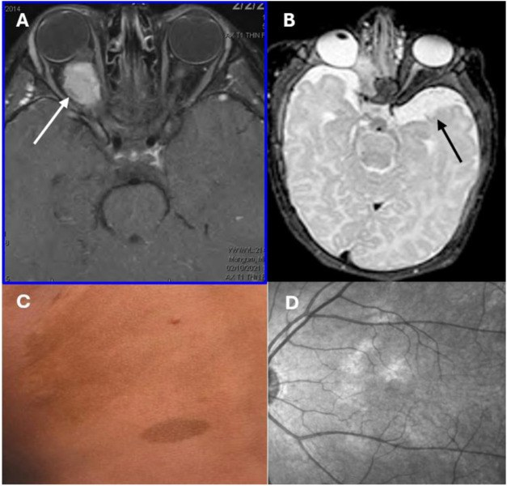
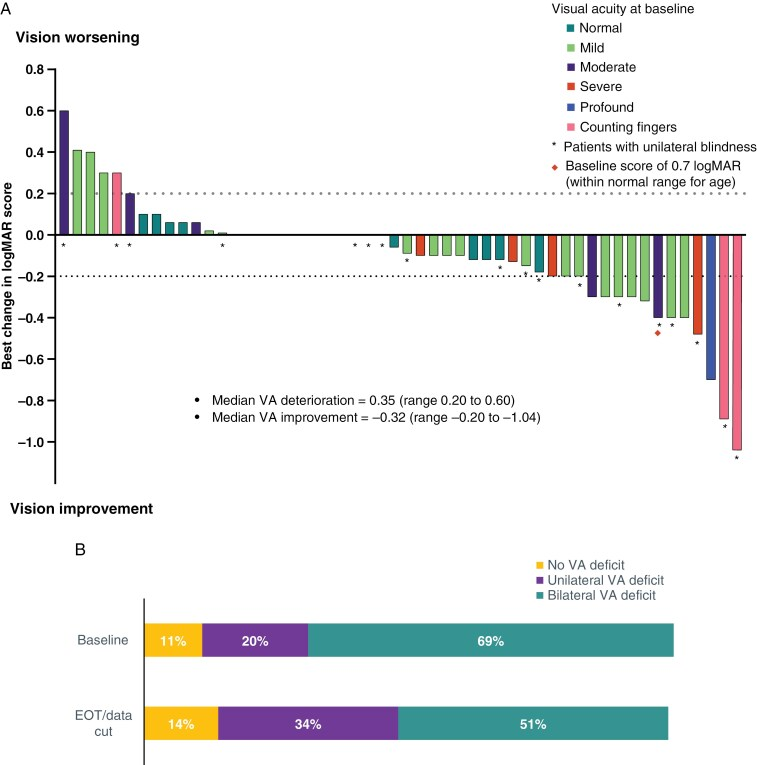

1758 — U thần kinh đệm đường thị trong NF1: theo dõi bằng MRI hay bằng thị lực, khi nào điều trị, vai trò MEK inhibitor / Optic pathway glioma in NF1
Tags: pattern:u-duong-thi pattern:day-giao-thoa vung:than-kinh-thi vung:nao protocol:MRI-hoc-mat protocol:sang-loc-thi-luc score:RANO-LGG incidentaloma:khong
Mức chắc chắn (certainty): tổng hợp y văn (literature synthesis) — 1 guideline quốc tế về giám sát u ở NF1 (ERN GENTURIS, EClinicalMedicine 2023, PMC9845795, CC BY), 1 đoàn hệ toàn quốc Hà Lan 197 trẻ u đường thị/dưới đồi (Cancers 2025, PMC11898773, CC BY), 1 đoàn hệ 115 bệnh nhân/168 mắt về kết cục thị lực (Front Surg 2022, PMC9478197, CC BY), 1 đoàn hệ đa trung tâm về vị trí/độ lan của LGG–NF1 (Neuro-Oncol Adv 2025, PMC12035607, CC BY), các bài tổng quan điều trị (Brain Sci 2025, PMC12385051; Neuro-Oncol Adv 2026, PMC13123696 — CC BY/CC BY-NC), 1 bài đồng thuận nhi khoa về u ở NF1 (Curr Oncol 2025, PMC12731700, CC BY), và 1 phân tích nhóm OPG của thử nghiệm FIREFLY-1 (Neuro-Oncology 2025, PMC12187376, CC BY). Không có ca nguyên văn do nhóm tự viết; ca trong quiz là ca có ảnh từ bài gốc, ghi rõ PMCID.
Câu chốt: phần lớn OPG ở NF1 là bệnh "câm" và không cần điều trị: 15–30% trẻ NF1 có OPG nhưng chỉ 30–50% có triệu chứng, và trong một loạt 83 bệnh nhân 52% hoàn toàn không triệu chứng. Vì vậy câu hỏi thực hành không phải "MRI có phát hiện được không" mà là "theo dõi bằng gì": guideline châu Âu (ERN GENTURIS 2023) khuyến cáo sàng lọc bằng THỊ LỰC/đáy mắt mỗi 6–12 tháng đến 8 tuổi, hằng năm đến tuổi trưởng thành và KHÔNG chụp MRI sàng lọc — MRI chỉ khi khám mắt gợi ý OPG. Ba con số phải thuộc: 40% OPG–NF1 cần điều trị (trung vị 10 tháng từ chẩn đoán tới điều trị); thị lực giảm ≥ 0,2 logMAR là ngưỡng "tiến triển"; và không sinh thiết để chẩn đoán OPG ở trẻ NF1.
1. Tổng quan bệnh học – cơ chế hình ảnh
1.1 Bệnh học và dịch tễ
- NF1 là bệnh u sợi thần kinh type 1 do đột biến NF1 (17q11.2) → mất neurofibromin, một GAP của RAS → RAS–MAPK hoạt hóa liên tục → u tăng sinh. Khối u đường thị là u tế bào hình sao thể lông (pilocytic astrocytoma, WHO độ 1) với sợi Rosenthal và thể hạt ưa eosin; ở NF1 thường không có dung hợp BRAF–KIAA1549 (khác thể lẻ tẻ) (PMC10649937, PMC13123696).
- Tần suất: OPG xuất hiện ở 15–30% trẻ NF1 (PMC10649937, PMC12731700); bài tổng quan hình ảnh dùng 15–20% (PMC13015055). OPG chiếm 30–50% tổng số OPG ở trẻ; ngược lại NF1 có mặt ở 30–50% trẻ OPG (PMC11898773).
- Tuổi: trung vị 4 tuổi; đại đa số trước 8 tuổi (tuổi chẩn đoán trung bình 4,5 tuổi) (PMC13015055, PMC9845795). U ngoài đường thị (thân não, tiểu não, tủy) chỉ 1–2% bệnh nhân NF1 (PMC13015055).
- Triệu chứng — phần lớn không có: chỉ 30–50% OPG–NF1 có triệu chứng; > 50% không giảm thị lực (PMC10649937). Loạt 83 bệnh nhân: 52% không triệu chứng, 30% một triệu chứng mắt, 18% nhiều triệu chứng (PMC10649937). Nói cách khác: OPG trên MRI ≠ bệnh cần điều trị.
- Điều trị — thiểu số: trong đoàn hệ toàn quốc 197 trẻ OPHG, 59 (29,9%) không bao giờ điều trị và 91,5% số đó là NF1; 40% OPG–NF1 cần điều trị, trung vị 10 tháng từ chẩn đoán đến điều trị (PMC11898773, PMC9478197).
1.2 TẠI SAO thấy được trên MRI — và tại sao thị lực quan trọng hơn ảnh
- T2/FLAIR tăng tín hiệu: u là mô giàu nước, tăng tế bào, phá vỡ myelin → tăng thời gian T2; vì vậy dày + tăng tín hiệu T2 ở dây thị/giao thoa là dấu hiệu nhạy nhất, không cần ngấm thuốc.
- Ngấm thuốc sau gadolinium thì biến thiên: u độ 1 có hàng rào máu–thần kinh thị bị phá vỡ không hoàn toàn → ngấm ít hoặc từng phần; trong ảnh mẫu ở mục 3, thành phần giao thoa chỉ ngấm tối thiểu. Vì vậy "không ngấm" không loại trừ OPG và "ngấm nhiều" không đồng nghĩa ác tính.
- TẠI SAO thị lực là tiêu chuẩn vàng: sợi trục không hồi phục; u có thể ổn định trên MRI trong khi thị lực đã giảm. Đoàn hệ 168 mắt: điều trị giúp cải thiện 13%, giữ nguyên 62%, xấu đi 25% — nghĩa là mất thị lực xảy ra ở 1/4 số mắt dù đã điều trị, và thời gian chờ là yếu tố quyết định (PMC9478197).
- Ngưỡng "tiến triển thị lực" dùng trong thử nghiệm: giảm ≥ 0,2 logMAR (≈ 2 dòng) so với ban đầu, xác nhận ở 2 lần khám liên tiếp cách ~12 tuần (PMC12187376). Tương đương mức "suy giảm vừa–nặng": 20/40 hoặc kém hơn ở cả hai mắt (PMC9478197).
- TẠI SAO không xạ trị ở trẻ NF1: NF1 là bệnh đột biến tạo u, xạ làm tăng u ác thứ phát trong trường chiếu và bệnh mạch não muộn (bài 262); xạ chỉ dành cho trẻ > 8–10 tuổi hoặc thất bại mọi thuốc (PMC12385051).
1.3 Ngưỡng định lượng trụ cột
| Đại lượng | Con số | Nguồn |
|---|---|---|
| Tỉ lệ OPG ở trẻ NF1 | 15–30% (hình ảnh: 15–20%); 30–50% OPG toàn bộ có NF1 | PMC10649937 · PMC13015055 · PMC11898773 |
| Triệu chứng | 30–50% có triệu chứng; > 50% không giảm thị lực; 52% không triệu chứng (loạt 83 ca) | PMC10649937 |
| Tuổi chẩn đoán | trung vị 4 tuổi; trung bình 4,5 tuổi; gần như tất cả < 8 tuổi | PMC13015055 · PMC9845795 |
| Cần điều trị | 40% OPG–NF1; 10 tháng từ chẩn đoán đến điều trị | PMC9478197 |
| Sàng lọc mắt | 0–8 tuổi: ≥ mỗi 12 tháng (mỗi 6 tháng nếu làm được); > 8 tuổi: hằng năm đến tuổi trưởng thành | PMC9845795 |
| Chỉ định MRI | chỉ khi khám mắt gợi ý OPG; hoặc trẻ > 2 tuổi khám nhiều lần không kết luận/không tin cậy | PMC9845795 |
| Ngưỡng tiến triển thị lực | ≥ 0,2 logMAR (≈ 2 dòng), xác nhận 2 lần liên tiếp ~12 tuần | PMC12187376 |
| Điều trị bậc 1 | vincristine + carboplatin: PFS 3 năm 61,8%, 5 năm 48,4% (đoàn hệ); PFS 3 năm 77%, 5 năm 69% (tổng quan) | PMC11898773 · PMC12385051 |
| Tuổi khởi trị là yếu tố nguy cơ | < 1 tuổi = yếu tố duy nhất độc lập dự báo tiến triển sau VC | PMC11898773 |
| Selumetinib (MEK) | PFS 2 năm 78% (± 8,5%); PR 24%, SD 56%, tiến triển 20%; thị lực cải thiện 21% / ổn định 68% / xấu 11% | PMC12385051 |
| Tovorafenib (RAF II) — nhóm OPG FIREFLY-1 | ORR 64% (RANO-HGG) / 50% (RAPNO) / 55% (RANO-LGG); thị lực giữ được 80% bệnh nhân / 87% mắt | PMC12187376 |
| Sinh thiết | không khuyến cáo để xác nhận OPG ở trẻ NF1 (đồng thuận 100%) | PMC12731700 |

Trái: T2 axial — dày và tăng tín hiệu giao thoa thị + đoạn trước giao thoa (mũi tên đỏ); các ổ tăng tín hiệu trắng chất (mũi tên vàng) là FASI của NF1, không phải u. Phải: T1 sau tiêm sagittal — thành phần giao thoa chỉ ngấm tối thiểu (mũi tên xanh), nên không ngấm không loại trừ OPG. Ảnh nguyên bản (Cancer Imaging 2026, PMC13015055, CC BY 4.0).2. Mẫu hình + chẩn đoán phân biệt theo vị trí (Gamut)
- Dày/tăng tín hiệu MỘT dây thị (prechiasmatic):
- OPG–NF1 (thường hai bên, hình thoi) · OPG lẻ tẻ · viêm thị thần kinh (ngấm, đau khi liếc, tự hồi phục) · bao mô mỡ quanh thị (meningioma bao thị — tram-track) · giả u viêm hốc mắt · di căn/leukemia.
- Dày GIAO THOA THỊ ± đường thị:
- OPG (NF1 hoặc lẻ tẻ) · u thần kinh đệm dưới đồi (thể lan tỏa, tiên lượng thị lực xấu hơn) · LCH (kèm cuống yên dày, ĐTĐ nhạt — bài 1751) · u mầm (hCG/AFP, mất điểm sáng T1 thùy sau) · sarcoid/viêm màng bồ đào thần kinh · bệnh mạch (NMOSD/MOGAD).
- Dày giao thoa + vùng dưới đồi + sụt cân ở nhũ nhi:
- hội chứng gian não (bài 1756) — thể ngược của béo phì dưới đồi.
- Tăng tín hiệu T2 KHÔNG choán chỗ, không ngấm, ở đồi thị/hạch nền/thân não:
- FASI (focal areas of signal intensity) của NF1 — không phải u, giảm dần theo tuổi (PMC13015055).
- Theo độ lan trên MRI (phân loại Dodge/sửa đổi — "MDC"): dây thị đơn thuần → giao thoa → đường thị; lan tỏa (MDC 2–3) ở 64% và dưới đồi 62,5% trong đoàn hệ điều trị → tiên lượng thị lực xấu hơn (PMC11898773).
3. Bảng so sánh phân biệt (ma trận đối chiếu)
| Thực thể (entity) | Hình ảnh điển hình (MRI) | Chốt vào (rule-in) | Chốt loại (rule-out) | Gợi ý xác nhận |
|---|---|---|---|---|
| OPG–NF1 (bài này) | Dày hình thoi dây thị/giao thoa, T2 tăng, ngấm ít–biến thiên; hai bên; kèm FASI, u sợi thần kinh, đốm café-au-lait | NF1 đã chẩn đoán + dày đường thị + thị lực/khám mắt bất thường | Khối choán chỗ đơn độc, ngấm mạnh, không tiêu chuẩn NF1 → nghĩ u khác | MRI sọ–hốc mắt + khám thần kinh nhãn khoa; không sinh thiết |
| OPG lẻ tẻ | Cùng hình ảnh nhưng một bên nhiều hơn, không FASI, không tiêu chuẩn NF1 | U đường thị không có NF1 + dày lan tỏa | Có ≥ 2 tiêu chuẩn NF1 → xếp NF1 | Tiêu chuẩn NF1 2021; mô bệnh nếu cần |
| Meningioma bao dây thị | Tram-track: hai đường ngấm quanh dây thị tối, vôi hóa, người lớn | Tram-track + vôi hóa + tuổi lớn | Dày TRONG trục, không vôi, trẻ em | CT thấy vôi hóa; MRI sau tiêm (bài 431) |
| Viêm thị thần kinh | Dày + ngấm mạnh, đau khi liếc, thị trường ám điểm trung tâm; hồi phục | Ngấm mạnh + đau + hồi phục nhanh + không có NF1 | Không ngấm, tiến triển nhiều tháng, có FASI | OCT (RNFL), kháng thể NMO/MOG, đáp ứng corticoid |
| LCH vùng dưới đồi–tuyến yên | Cuống yên dày + mất điểm sáng T1 thùy sau, có thể dày giao thoa | ĐTĐ nhạt + tổn thương xương/da + CD1a/Langerin | Không có ĐTĐ nhạt, không tổn thương ngoài thần kinh | Sinh thiết xương/da (bài 1751) |
| U mầm vùng trên yên | Khối giao thoa/dưới đồi, mất điểm sáng T1 thùy sau, hCG/AFP tăng | Marker tăng + mất điểm sáng T1 | Marker âm + không mất điểm sáng T1 | hCG/AFP dịch não tủy; MRI toàn trục (bài 1731) |
| FASI của NF1 | Ổ T2/FLAIR tăng, không choán chỗ, không ngấm, đồi thị/hạch nền/thân não | Bờ không rõ, không hiệu ứng khối, ổn định/giảm theo tuổi | Dày đường thị + hiệu ứng khối + giảm thị lực | So sánh nhiều lần; không điều trị |
| U thần kinh đệm dưới đồi lan tỏa | Khối lớn dưới đồi ± giao thoa, hội chứng gian não hoặc béo phì dưới đồi | Sụt cân ở nhũ nhi hoặc béo phì dưới đồi + khối dưới đồi | Chỉ dày đường thị, BMI bình thường | BMI SDS, nội tiết (bài 1754/1756) |

Trái: T2 — dày giao thoa thị và đoạn trước giao thoa, tăng tín hiệu (PMC13015055). Phải: T1 sau tiêm — dây thị phải dày và ngấm thuốc (A), kèm đốm café-au-lait (C) và nốt hắc mạc (D) của NF1 (PMC13376734). Hai kiểu ngấm khác nhau → không dựa vào ngấm thuốc để chẩn đoán. Ảnh ghép letterbox, cả hai nguồn CC BY 4.0.4. Protocol chụp + hệ phân độ/điểm chuẩn hóa
4.1 Sàng lọc: mắt trước, MRI sau
- Bắt đầu ngay khi chẩn đoán/xác định NF1, khám mắt cơ sở ở mọi tuổi: thị lực, thị trường, phản xạ đồng tử, vận nhãn, đáy mắt (PMC9845795).
- 0–8 tuổi: ≥ 12 tháng/lần (6 tháng nếu làm được); > 8 tuổi: hằng năm đến tuổi trưởng thành; OCT RNFL/GCL khi làm được (PMC9845795).
- MRI chỉ khi: khám mắt gợi ý OPG, hoặc trẻ > 2 tuổi có khám nhiều lần không kết luận/không tin cậy (do tuổi, thiếu chú ý); khám bất thường/không tin cậy phải lặp lại sớm (PMC9845795).
- Phản biện (quan trọng): nhiều trung tâm vẫn chụp MRI sàng lọc cho mọi trẻ NF1 mới chẩn đoán. Guideline châu Âu không khuyến cáo vì không có bằng chứng rằng phát hiện u không triệu chứng cải thiện thị lực, trong khi dương tính giả (FASI) gây lo lắng và điều trị oan (PMC9845795). Bài này chọn lập trường theo guideline nhưng ghi rõ thực hành địa phương có thể khác.
- Không chụp MRI lặp lại định kỳ cho u ổn định, không triệu chứng — theo dõi bằng thị lực (PMC9845795). Khi có chỉ định chụp: MRI sọ + hốc mắt, T1W sau tiêm + T2W/FLAIR, lát mỏng ≤ 3 mm, đọc 3 mặt phẳng và đo đường kính lớn nhất ở giao thoa trên cùng mặt phẳng với lần trước (ngưỡng kỹ thuật, không phải ngưỡng chẩn đoán).
4.2 Hệ phân độ/đánh giá đáp ứng
- Dodge/sửa đổi (MDC): dây thị → giao thoa → đường thị; lan tỏa (2–3) và có dưới đồi = tiên lượng xấu hơn (PMC11898773).
- RANO-LGG (và RAPNO cho trẻ): đáp ứng dựa trên thay đổi kích thước T2/FLAIR và ngấm thuốc; ORR khác nhau tùy tiêu chuẩn — trong FIREFLY-1 nhóm OPG: 64% / 50% / 55% theo RANO-HGG / RAPNO / RANO-LGG (PMC12187376). Vì vậy không so sánh "tỉ lệ đáp ứng" giữa hai nghiên cứu dùng tiêu chuẩn khác nhau.
- Thị lực là tiêu chí ngang hàng với ảnh: "tiến triển" = giảm ≥ 0,2 logMAR xác nhận 2 lần ~12 tuần; "đáp ứng" = tăng ≥ 0,2 logMAR (PMC12187376).
4.3 Thuật toán điều trị
flowchart TD
A[Tre NF1 co day duong thi<br/>tren MRI hoac kham mat bat thuong] --> B{Co trieu chung<br/>hoac giam thi luc?}
B -->|Khong| C[Theo doi thi luc 6-12 thang<br/>MRI khi thi luc doi hoac trieu chung moi]
B -->|Co| D[Danh gia lai: thi luc logMAR 2 mat<br/>thi truong - OCT RNFL/GCL<br/>MRI so-hoc mat co doi chieu]
D --> E{Tien trien that?<br/>giam tren hoac bang 0-2 logMAR<br/>hoac u lon len ro ret<br/>hoac trieu chung duoi doi}
E -->|Khong| C
E -->|Co| F{Tre duoi 1 tuoi<br/>hoac u lan toa duoi doi?}
F -->|Co| G[Can nhac som: vincristine + carboplatin<br/>theo doi sat thi luc]
F -->|Khong| G
G --> H{That bai hoac tai phat?}
H -->|Co| I[MEK inhibitor: selumetinib<br/>hoac tovorafenib neu BRAF dung hop]
H -->|Khong| J[Tiep tuc VC du 12-18 thang<br/>roi theo doi]
I --> K{Xa tri?<br/>chi khi tren 8-10 tuoi<br/>va het lua chon}
K -->|Co| L[Xa tri giac do lieu<br/>tranh o tre NF1]
K -->|Khong| J
5. Biến thể bình thường và cạm bẫy
- FASI không phải u: ổ T2 tăng tín hiệu ở đồi thị, hạch nền, thân não, tiểu não — không choán chỗ, không ngấm, giảm dần theo tuổi; gọi nhầm là "OPG lan tỏa" dẫn tới điều trị hóa chất không cần thiết (PMC13015055).
- "Không ngấm thuốc = không phải u" — sai: thành phần giao thoa trong ảnh mẫu chỉ ngấm tối thiểu; ngấm thuốc không dùng để chẩn đoán hay phân độ (PMC13015055).
- "MRI ổn định = bệnh ổn định" — sai: u có thể ổn định trên ảnh trong khi thị lực đã giảm; và 25% mắt xấu đi dù đã điều trị (PMC9478197). Điều trị theo thị lực, không theo ảnh đơn thuần.
- "Sinh thiết để chắc chắn" — ở trẻ NF1 có OPG điển hình, sinh thiết không được khuyến cáo (đồng thuận 100%): nguy cơ tổn thương thị giác/thần kinh mà không đổi điều trị (PMC12731700).
- "U nhỏ thì lành" — tuổi < 1 tuổi khi bắt đầu điều trị là yếu tố duy nhất độc lập dự báo tiến triển; u ở trẻ nhỏ nguy hiểm hơn kích thước (PMC11898773).
- "Điều trị xong là khỏi" — OPG–NF1 là bệnh mạn: 40% cần điều trị, nhiều trẻ cần nhiều đợt, và NF1 cần theo dõi suốt đời (u ác thứ phát, bệnh mạch, nội tiết) (PMC9478197).
- Bẫy "thị lực khó đo ở trẻ < 3 tuổi"** — dùng **VEP/OCT** và **khám lặp lại**; guideline cho phép **MRI** khi khám **nhiều lần không kết luận** ở trẻ **> 2 tuổi (PMC9845795).
- Bẫy "NF1 là chống chỉ định xạ" — không tuyệt đối: xạ có thể dùng khi > 8–10 tuổi và hết lựa chọn, nhưng phải cân nhắc u ác thứ phát (PMC12385051).
6. Tự lượng giá — Blind Quiz ngay trên trang tĩnh
Ca 1 — Trẻ 5 tuổi NF1, khám mắt định kỳ thấy thị lực mắt trái giảm. MRI T2 axial hốc mắt.
- Gợi ý lâm sàng: không đau, không đỏ mắt; da có nhiều đốm nâu; thị lực phải 20/25, trái 20/70.
- Câu hỏi: (1) Mô tả 2 loại tổn thương tăng tín hiệu. (2) Cái nào là u, cái nào không? (3) Có cần sinh thiết không?
Bấm để hiện đáp án (findings + chẩn đoán)
- Mũi tên đỏ: giao thoa thị và đoạn trước giao thoa dày, tăng tín hiệu T2 → OPG.
- Mũi tên vàng: các ổ tăng tín hiệu không choán chỗ ở chất trắng/bán cầu → FASI của NF1, không phải u, không điều trị.
- Không sinh thiết: NF1 + OPG điển hình + thị lực giảm một bên → chẩn đoán đủ; sinh thiết chỉ đổi điều trị khi hình ảnh không điển hình/không có NF1.
- Hướng đi: điều trị theo thị lực (đã giảm ≥ 0,2 logMAR) — vincristine + carboplatin; theo dõi thị lực mỗi 3 tháng trong đợt điều trị.
- Nguồn ảnh: Cancer Imaging 2026, Fig. 2 — PMC13015055, CC BY 4.0 (nguyên bản).
Ca 2 — Trẻ 4 tuổi, đốm café-au-lait từ 1 tuổi. MRI T1 sau tiêm: dây thị phải dày, ngấm thuốc.

- Gợi ý lâm sàng: chưa có triệu chứng thị giác; khám mắt bình thường; mẹ hỏi "có phải chụp MRI mỗi năm không?".
- Câu hỏi: (1) Chẩn đoán? (2) Có chỉ định điều trị ngay? (3) Trả lời mẹ thế nào về lịch theo dõi?
Bấm để hiện đáp án (findings + chẩn đoán)
- OPG–NF1 một bên (dày + ngấm thuốc dây thị); đốm café-au-lait và nốt hắc mạc là tiêu chuẩn NF1.
- Chưa điều trị: không triệu chứng, thị lực bình thường → theo dõi, vì chỉ 30–50% OPG–NF1 có triệu chứng và > 50% không giảm thị lực.
- Trả lời: khám mắt 6–12 tháng/lần đến 8 tuổi, sau đó hằng năm đến tuổi trưởng thành; MRI không cần lặp định kỳ nếu thị lực ổn — chỉ chụp khi khám mắt bất thường hoặc có triệu chứng mới (ERN GENTURIS 2023).
- Nguồn ảnh: Frontiers in Cell and Developmental Biology 2026, Fig. 1 — PMC13376734, CC BY 4.0 (nguyên bản).
Ca 3 — Nhóm OPG tái phát/khó trị trong FIREFLY-1: đọc đáp ứng THỊ LỰC.

- Gợi ý lâm sàng: trẻ OPG BRAF-altered đã thất bại ≥ 1 phác đồ; điều trị tovorafenib; đo thị lực mỗi ~12 tuần.
- Câu hỏi: (1) Trục tung là gì và chiều nào là tốt? (2) Ngưỡng "đáp ứng" và "tiến triển"? (3) Tỉ lệ giữ được thị lực?
Bấm để hiện đáp án (findings + chẩn đoán)
- Trục tung = thay đổi logMAR so với ban đầu; giảm logMAR (cột âm) = thị lực TỐT LÊN (logMAR nhỏ = thị lực tốt).
- Đáp ứng: giảm ≥ 0,2 logMAR xác nhận 2 lần liên tiếp ~12 tuần; tiến triển: tăng ≥ 0,2 logMAR.
- Kết quả nhóm OPG: thị lực cải thiện 31% bệnh nhân / 27% mắt, ổn định 49% / 60% → giữ được thị lực 80% bệnh nhân / 87% mắt; ORR u 50–64% tùy tiêu chuẩn RANO/RAPNO.
- Bài học: đáp ứng thị lực và đáp ứng u không song hành hoàn toàn — phải báo cả hai.
- Nguồn ảnh: Neuro-Oncology 2025, Fig. 3 — PMC12187376, CC BY 4.0 (nguyên bản).
Bài liên quan chéo
- 400 – Tổng quan Mắt & thị giác
- 431 – U thần kinh thị: glioma vs meningioma (phân biệt hình ảnh trong trục vs tram-track)
- 600 – Tổng quan Hệ Nhi khoa
- 1756 – Hội chứng gian não ở nhũ nhi (u đường thị/dưới đồi thể gầy teo)
- 1754 – Hội chứng dưới đồi ở trẻ (béo phì dưới đồi sau tổn thương)
- 1751 – LCH vùng dưới đồi–tuyến yên (cuống yên dày + ĐTĐ nhạt)
- 1731 – U mầm nội sọ vùng trên yên
- 262 – Bệnh mạch máu lớn do xạ trị não (moyamoya) (lý do tránh xạ ở trẻ NF1)
Ảnh
1758_opg_T2_PMC13015055-F2.jpg— T2 axial: dày giao thoa thị + FASI; T1 sagittal sau tiêm: ngấm tối thiểu.1758_opg-screening_PMC13376734-F1.jpg— T1 sau tiêm dây thị dày ngấm thuốc + đốm café-au-lait + nốt hắc mạc.1758_visual-response_PMC12187376-F3.jpg— waterfall thay đổi thị lực (logMAR) ở nhóm OPG FIREFLY-1.composite_opg_mri.jpg— ảnh ghép 2 ô, cả hai nguồn CC BY 4.0.- Nguồn + giấy phép từng ảnh: xem
images/CREDITS.mdvàsources.md.
Không dùng để chẩn đoán độc lập khi chưa có người hướng dẫn.